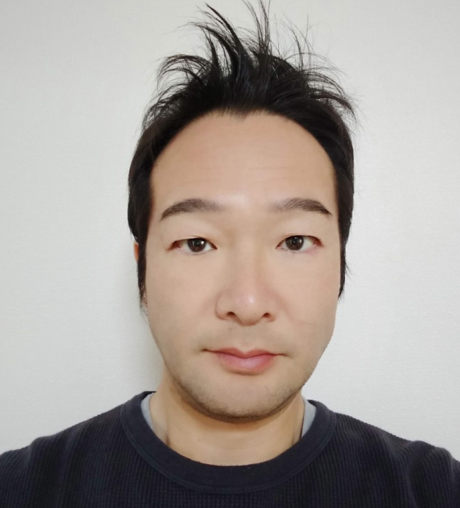

教員

研究員

小野地 光弘
Civic Tech 進めたい！
小酒井 亮太
よろしくお願いします
研究生
坂井 裕
今の研究を良いものにできるよう頑張っていきたい。

情報工学科
松本 宇宙
博士後期課程

情報工学専攻
河村 郁江
あうあうあ
廣瀬 伸行
楽しい日と忙しい日の一日の時間は倍はほしい。
博士前期課程２年

情報工学系プログラム
末永 彩羽
心に余裕を持つ

情報工学系プログラム
張 伯陽
気に入ったポケモンはアーマーガアです
創造工学プログラム
吉村友希
コツコツと
博士前期課程１年
創造工学プログラム
石塚 光
頑張ります！
情報工学系プログラム
木下 良輔
TOEICがんばる

情報工学系プログラム
杉山紘次郎
スクスロ最強

山内 康司
社会人学生です。頑張ります！
山内 康司
社会人学生です。頑張ります！

Computer Science Program
Md Nadim Kaysar
学部４年

情報工学科
海老 惟槻
よろしくお願いいたします
情報工学科
大平 盛斗
よろしくお願いします

情報工学科
佐藤 弦
よろしくお願いします
情報工学科
橋本 慧海
将来の夢はノマドワーカー
卒業生
2015年度卒
西田 拓哉
2015年度卒
山野 太靖
2016年度卒
後藤 誉昌
2017年度卒
成瀬 雅人
2017年度卒
石川 亮太
2017年度卒
有薗 翔太
2017年度卒
熊崎 滉大
2018年度卒
一ノ瀬 修吾
2018年度卒
池田 雄斗
2018年度卒
水野 創太
2018年度卒
宮脇 克典
2018年度卒
渡辺 賢
2018年度卒
荒川 智哉
2019年度卒
北川 晃
2019年度卒
幸浦 弘昂
2019年度卒
内藤 勝太
2019年度卒
蔡 超
2019年度卒
Muhamad Rizky Yanuar
2019年度卒
櫻井 陽太
2019年度卒
清水 陽太
2020年度卒
神谷 晃
2020年度卒
髙瀬 遥矢
2020年度卒
長谷川 徳賢
2020年度卒
張 翔宇
2020年度卒
安田 隼大
2020年度卒
開發 大樹
2021年度卒
安田 健人
2021年度卒
JIN Yuxi